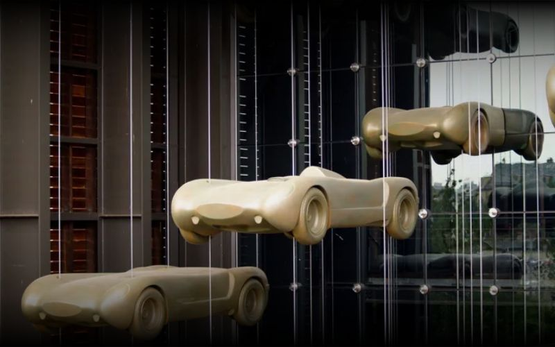

Commençons par lever un malentendu. Mulhouse n'est pas Strasbourg. Ce n'est pas non plus Colmar. Elle n'a pas les colombages de carte postale ni la cathédrale qui fait couper le souffle aux touristes. Ce qu'elle a, c'est autre chose — une identité industrielle assumée, une histoire singulière, et une densité culturelle et muséale qui n'a littéralement pas d'équivalent en France.
Et pour le team building ? C'est précisément ce caractère un peu à part qui en fait une base intéressante. Les équipes qui viennent à Mulhouse sont souvent surprises. C'est bien — la surprise, c'est le début d'un bon souvenir partagé.
Mulhouse, une ville à comprendre avant de choisir son activité
Un peu d'histoire pour commencer — parce qu'elle éclaire le présent de manière assez directe.
Mulhouse a été une République indépendante jusqu'en 1798. Pas française, pas allemande : une ville libre, alliée aux cantons suisses, qui a géré ses propres affaires pendant des siècles pendant que le reste de l'Alsace changeait de mains. Cette indépendance d'esprit, cette tendance à faire les choses à sa façon — on la retrouve encore dans le caractère de la ville.
C'est ensuite l'industrie textile qui a construit Mulhouse au XIXe siècle. La ville est devenue leader mondial du tissu imprimé à partir de 1746 — quand des bourgeois locaux ont eu l'idée de reproduire les "indiennes", ces tissus orientaux qui faisaient fureur dans l'aristocratie. Cette audace entrepreneuriale a fait de Mulhouse le "Manchester français" de l'époque. Onze musées sont nés de cet héritage. Onze.
Mulhouse est surnommée "la capitale européenne des musées scientifiques, techniques et industriels". Cité du Train (plus grand musée ferroviaire d'Europe), Musée National de l'Automobile (Collection Schlumpf — plus de 400 voitures dont une centaine de Bugatti), Musée de l'Impression sur Étoffes, Electropolis... Tout ça dans une ville de 110 000 habitants. Le rapport musée/habitant est légèrement dingue.
Pourquoi c'est pertinent pour le team building ? Parce que cette culture industrielle crée un terrain particulier. Les anciens sites réhabilités — la Fonderie, DMC/Motoco — sont devenus des espaces culturels et créatifs qui proposent des cadres de team building uniques. Faire un atelier street art dans une ancienne usine textile, c'est différent d'en faire dans une salle polyvalente.
Les activités qui marchent bien à Mulhouse
La réalité virtuelle — EVA Mulhouse (Wittenheim)
À Wittenheim, à quelques minutes du centre, EVA propose l'une des expériences de VR multi-joueurs les plus avancées en Alsace. Missions collaboratives en free-roam (on se déplace vraiment dans l'espace), accessibles à tous les niveaux, jusqu'à 200 personnes en rotation. C'est l'activité qui convertit les sceptiques les plus résistants — et qui fonctionne aussi bien avec un CODIR qu'avec une équipe commerciale.
🥽 EVA Mulhouse — Réalité Virtuelle
Free-roam VR multi-joueurs à Wittenheim. De 40 min à demi-journée. Missions coopératives ou compétitives selon l'objectif. Accessible dès 19€/pers. et jusqu'à 200 participants.
Jeux & Digital · Cohésion · Accessible à tousLe lancer de hache — Wittenheim aussi
Toujours à Wittenheim (décidément). Le lancer de hache est l'activité qui a le meilleur rapport mémorabilité/prix de tout l'univers team building alsacien. Une hache, une cible, un animateur patient, et une équipe qui ne savait pas qu'elle passerait une après-midi aussi bonne. Dès 20€ par personne, accessible à partir de 6 participants.
Le street art dans les friches industrielles
C'est là que Mulhouse a un vrai avantage comparatif. La ville compte plusieurs anciens sites industriels reconvertis — notamment dans le quartier DMC/Motoco — où des artistes locaux interviennent régulièrement. Des prestataires proposent des ateliers street art dans ces espaces : pochoirs, bombes, marqueurs, fresque collective. Le résultat reste dans vos bureaux. Et le cadre — une ancienne usine textile du XIXe siècle — donne une dimension supplémentaire à l'expérience.
🎨 Atelier Street Art Collaboratif
Création d'une fresque collective à Mulhouse avec un artiste local. Dans les espaces industriels réhabilités ou directement sur vos murs. Dès 35€/pers. pour des groupes de 6 à 60 personnes.
Créatif · WTF · MémorableL'escalade de bloc — Hapik Wittenheim
Sur plus de 2 000 m² dont 390 m² de blocs et les plus hautes voies d'escalade de France (25 mètres). Hapik accueille les groupes entreprise avec des formats adaptés. L'escalade a un avantage particulier en team building : elle force la confiance verticalement — et la confiance horizontale entre collègues suit souvent.

Mulhouse pour un séminaire + team building
L'agglomération mulhousienne a une infrastructure hôtelière solide et des salles de séminaire bien équipées — souvent à des tarifs nettement inférieurs à Strasbourg pour une qualité comparable. C'est un argument pragmatique mais réel pour les RH qui gèrent un budget.
La logistique est aussi un point fort : Mulhouse est à 30 minutes de Bâle et de l'aéroport EuroAirport, ce qui en fait une base accessible pour les équipes internationales. Les vols directs depuis Paris, Lyon, Amsterdam ou Londres atterrissent directement là — pas besoin de traverser toute l'Alsace.
L'idée de journée complète : Matinée séminaire dans un hôtel ou espace de coworking du centre. Déjeuner au winstub du coin (la cuisine mulhousienne mérite qu'on s'y arrête). Après-midi team building VR ou lancer de hache à Wittenheim. Soirée en ville autour d'une dégustation. Budget indicatif : 120 à 180€ par personne tout compris pour une équipe de 15 à 30 personnes.
Ce que Mulhouse offre que les autres villes n'ont pas
Trois choses, concrètement.
Les musées comme cadre de team building. La Cité du Train privatise pour les groupes. Le Musée National de l'Automobile aussi. Organiser un cocktail ou un débrief dans la même nef que l'Orient-Express ou une Bugatti Type 35 — c'est un souvenir qui ne ressemble à aucun autre. C'est le genre de "wow" silencieux qui crée de la cohésion sans qu'on ait besoin de dire un mot.
L'accès au Sundgau. À moins de 20 minutes de Mulhouse, le Sundgau offre des vallées, des étangs à carpes et des villages préservés qui constituent un cadre idéal pour les activités nature ou slow. La plupart des équipes ne savent même pas que ça existe — c'est un atout méconnu.
La mixité culturelle. Mulhouse est l'une des villes les plus cosmopolites d'Alsace — avec des habitants originaires de plus de 130 pays. Pour les entreprises avec des équipes internationales, cette dimension est concrète : les restaurants, les prestataires, les cadres sont habitués à la diversité. Ce n'est pas un argument marketing, c'est une réalité quotidienne.
La saison idéale pour un team building à Mulhouse
Printemps (avril–juin) : le meilleur choix. Météo douce, activités outdoor opérationnelles, lieux disponibles. Les vignobles alsaciens sont à 30 km et leur beauté de ce moment de l'année justifie de prolonger la journée.
Automne (septembre–octobre) : excellent aussi — vendanges, lumière chaude, activités intérieures et extérieures au choix. Les lieux se réservent vite en octobre, anticipez.
Hiver (décembre) : la proximité des marchés de Noël alsaciens est un bonus réel. Une journée team building suivie d'une soirée au marché de Colmar à 30 minutes, c'est imbattable pour une clôture d'année.
Toutes les activités disponibles à Mulhouse
Filtrez par univers, format et budget — et trouvez ce qui correspond à votre équipe.